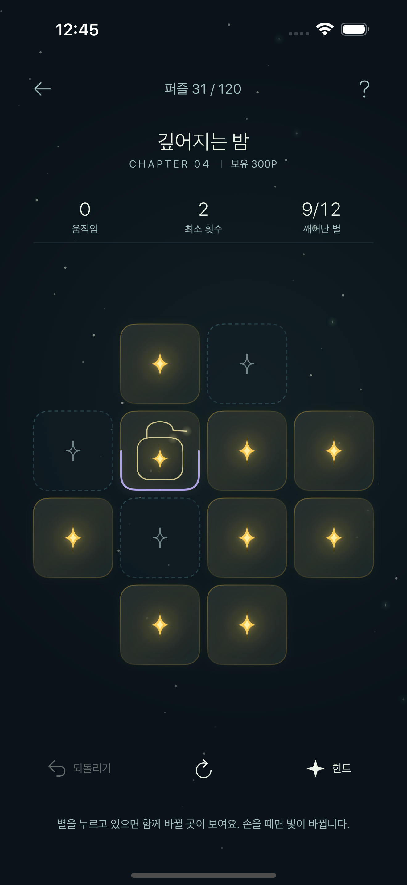

ONE TOUCH, A LITTLE CHANGE
가까운 별들도
함께 깨어나요.
별을 누르면 자신과 상하좌우 별의 빛이 바뀝니다.
모든 별이 켜지는 순간, 작은 밤 하나가 완성돼요.
빛을 붙잡는 고리와 별 사이의 빈칸.
단순한 시작 뒤에, 조금씩 깊어지는 생각을 만나보세요.
LUELI · A QUIET LITTLE PUZZLE
lueli
별 하나를 깨우면, 밤이 조금 달라져요.
서두를 필요 없이, 당신의 속도로.
하나의 빛이, 또 다른 빛에 닿을 때.
ONE TOUCH, A LITTLE CHANGE
별을 누르면 자신과 상하좌우 별의 빛이 바뀝니다.
모든 별이 켜지는 순간, 작은 밤 하나가 완성돼요.
빛을 붙잡는 고리와 별 사이의 빈칸.
단순한 시작 뒤에, 조금씩 깊어지는 생각을 만나보세요.

LUELI · ACTUAL GAMEPLAYLITTLE LIGHTS, YOUR OWN SKY
열 개의 작은 퍼즐을 지나면 별자리 하나가 완성됩니다.
가까이 다가갔던 별에서 천천히 멀어져,
당신이 밝힌 밤을 바라보세요.
시간 제한 없이 · 오프라인 플레이 · iPhone과 iPad
오늘은 별 하나만 깨워도 괜찮아요.